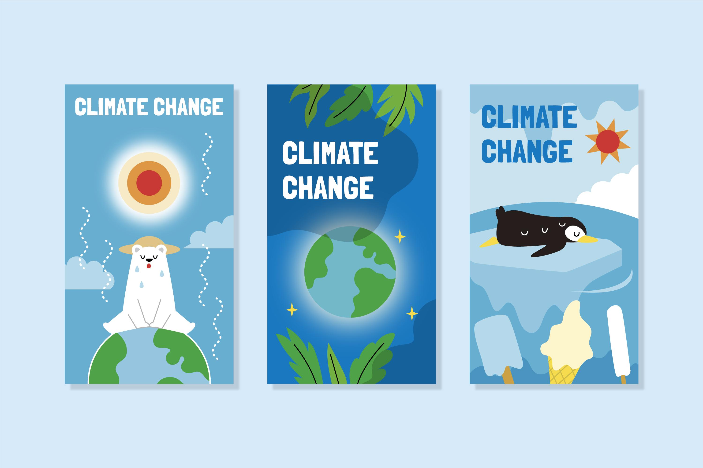
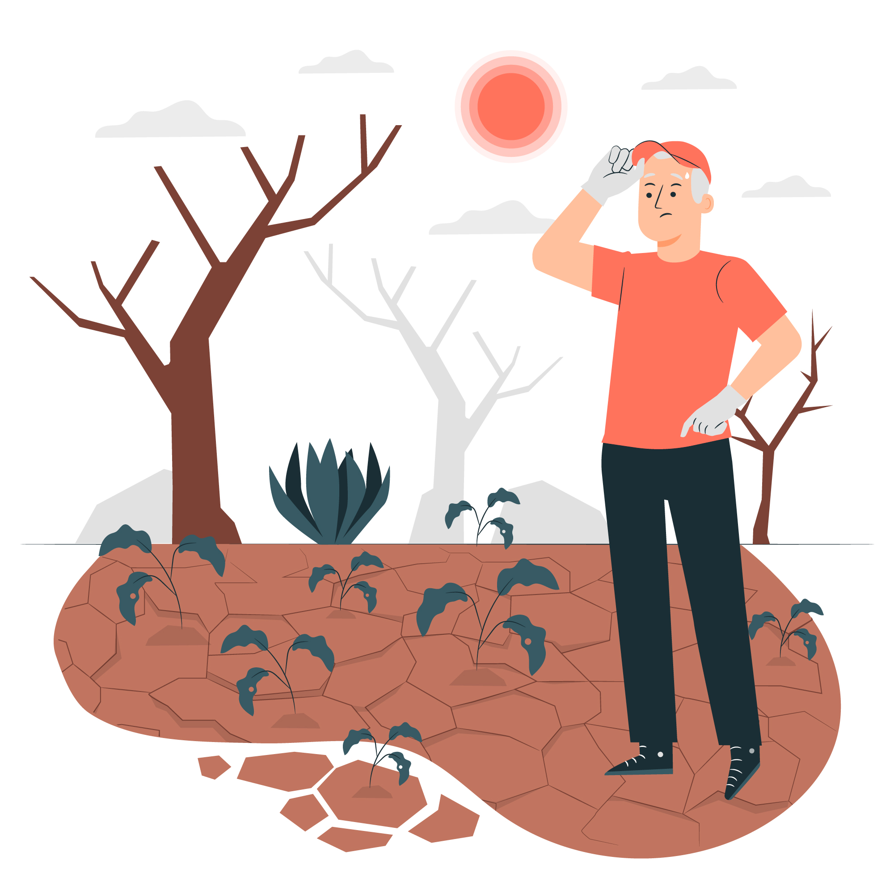
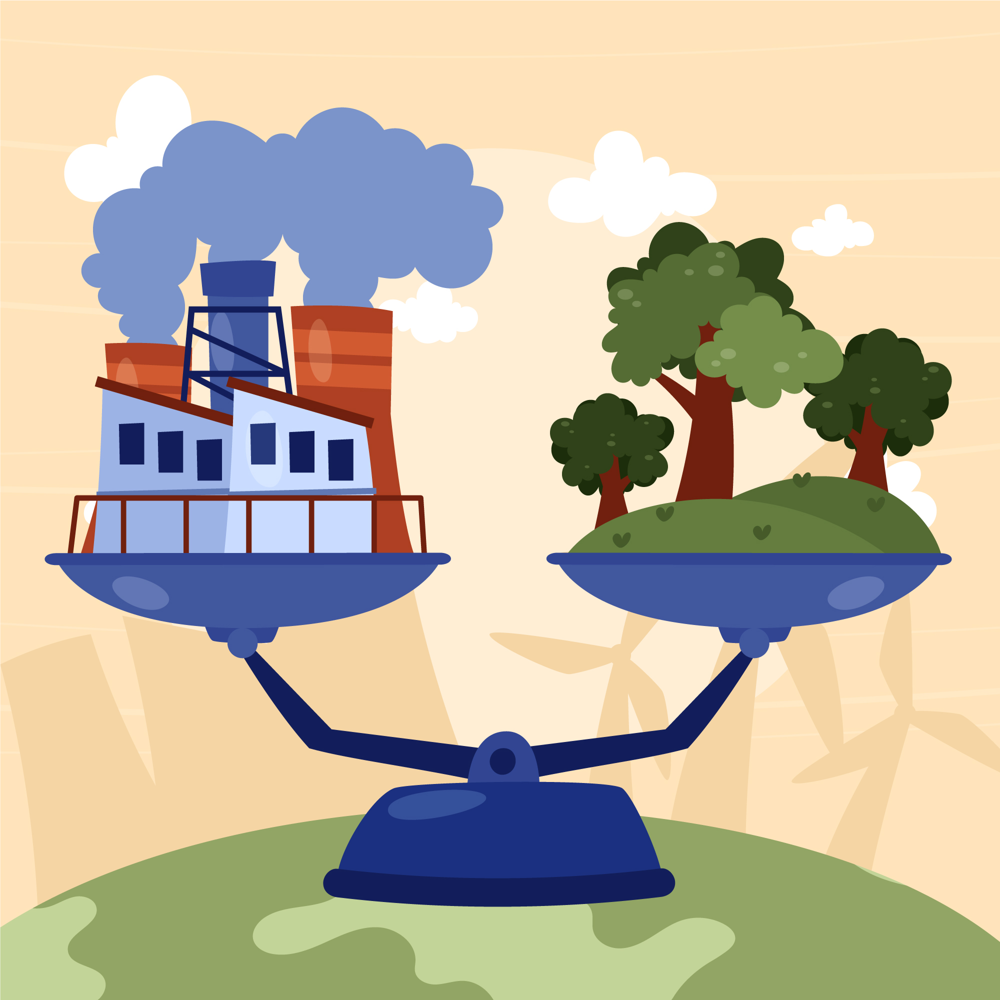

Penyebab Pemanasan Global

Apa sebenarnya yang menyebabkan bumi ini semakin panas? Mengapa bumi bisa mengalami kenaikan suhu? Nah,Ini dia penyebabnya
- Efek rumah Kaca
Karbon dioksida atau CO 2 yang dihasilkan oleh kegiatan di bumi ini seperti pernafasan dan hasil pembakaran bahan bakar menyelubungi bumi. Karena kadarnya sudah berlebihan maka CO2 seolah seperti kaca yang menutup permukaan bumi.
- Efek Umpan Balik
Selain efek rumah kaca, efek umpan balik juga memberi pengaruh pada pemanasan global. Duh umpan balik berasa nonton bola. Umpan balik disini contohnya adalah penguapan air.
Proses pemanasan selain menghasilkan karbondioksida juga menghasilkan uap air. Contoh ya reaksi pembakaran hidrokarbon seperti berikut ini: CxHy + O2 → CO2 + H2O
Akibat Pemasanan Global

Bagaimana kabar Indonesia, sejauh mana pemanasan global akan memberikan dampak pada negeri ini? Pada tahun 2030 menurut Badan Klimatologi Meteorologi dan Geofisika akan terjadi peningkatan suhu sebesar 0,5 derajat celcius. 2030 itu tinggal 9 tahun lagi gaesss!
Selain kenaikan suhu udara, kasus kekeringan juga akan meningkat di Pulau Sumatera bagian selatan, sebagian besar Pulau Jawa, Madura, Bali, Nusa Tenggara Barat (NTB), hingga Nusa Tenggara Timur (NTT) pada 2030. Sementara musim hujan, lebat hingga ekstrim juga cenderung bertambah hingga 40 persen dibandingkan saat ini.
Dampak Pemanasan Global

- Iklim Tidak Stabil
Daerah-daerah yang dulu mengalami salju ringan kini tak mengalaminya lagi. Di pegunungan di daerah subtropis, bagian yang tertutup salju akan semakin sedikit serta akan lebih cepat mencair. Musim tanam akan lebih lama di beberapa area. Suhu pada musim dingin dan malam hari akan cenderung untuk bertambah.
- Meningkatnya permukaan air laut
Apa yang terjadi jika air laut naik? Tentu saja daerah seputaran pantai akan terendam. Seperti negara Belanda yang kehilangan 17,6 % daerahnya karena tenggelam oleh naiknya 100 cm permukaan laut. Erosi dari tebing, pantai, dan bukit pasir akan mengalami peningkatan. Ketika tinggi lautan mencapai muara sungai, banjir akibat air pasang tak bisa dihindari lagi.
Cara Mengantisipasi Pemanasan Global

Berikut adalah beberapa langkah yang bisa dilakukan untuk turut serta dalam meminimalisir dampak pemanasan global :
- Konservasi lingkungan seperti melakukan reboisasi, penenaman pohon dan penghijauan lahan kritis.
- Menggunakan energi yang bersumber dari energi alternatif (Energi air, matahari, angin, bioenergy) guna mengurangi penggunaan energi bahan bakar fosil (minyak bumi dan batu bara).
- Daur ulang dan efisiensi energi.